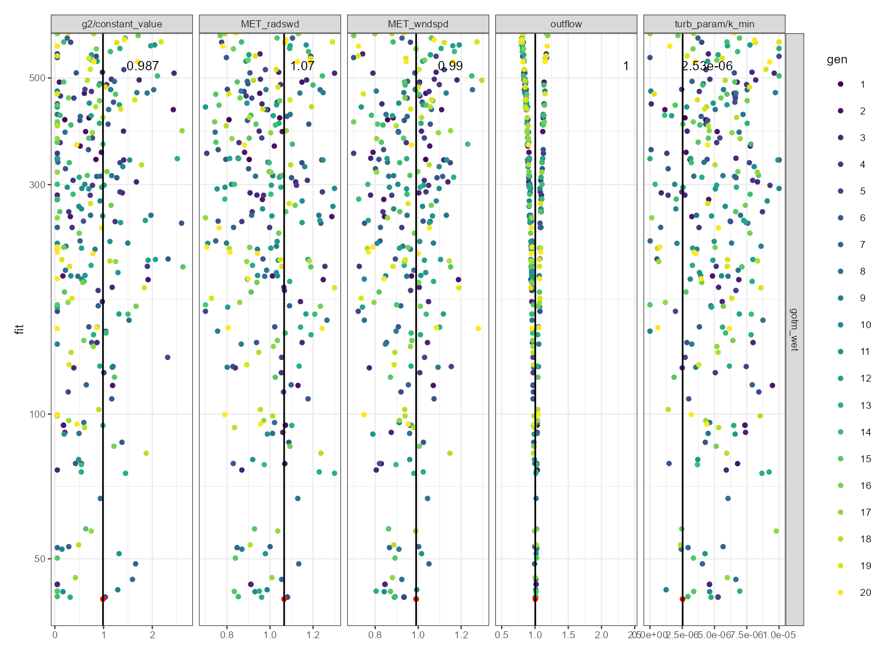

Calibration strategies
calibration-strategies.RmdCalibration strategies for Aquatic Ecosystem Models
Calibrating aquatic ecosystem models is a difficult task. The models are complex, and the data are often sparse and noisy.
Optimising a model is a process of finding the best set of parameters. This can potentiall be across a wide range of response variables. For example, it can include optimisations for water temperature, lake level, and chlorophyll-a. Therefore, it is important to have a strategy for calibrating the models under such scenarions.
This vignette will demonstrate how to calibrate the AEME models using different strategies.
Strategy #1: Calibrate lake level
When running long-term simulations for lakes, it is critically important that the lake water balance is fully resolved. This is because the lake level will be a key driver for many of the processes in the lake. For example, the lake level will determine the surface area of the lake, which will determine the amount of incoming shortwave radiation which affects evaporation the overall heat exchane in the lake. It will also determine the volume of the lake, which will determine the amount of nutrients in the lake.
Here we demonstrate how to calibrate the lake level for the AEME-GOTM
model. It is important to remember that if there is no observed lake
level present in the aeme object, then the lake level will
be estimated using supplied rainfall, inflows (if present), outflows (if
present), and calculated evaporation using air temperature and wind
speed and lake surface area. When this cal
# Load libraries
library(AEME)
#>
#> Attaching package: 'AEME'
#> The following object is masked from 'package:stats':
#>
#> time
library(aemetools)
# Create a temporary directory
tmpdir <- "calib-test"
dir.create(tmpdir, showWarnings = FALSE)
aeme_dir <- system.file("extdata/lake/", package = "AEME")
# Copy files from package into tempdir
file.copy(aeme_dir, tmpdir, recursive = TRUE)
#> [1] TRUE
path <- file.path(tmpdir, "lake")
aeme_data <- yaml_to_aeme(path = path, "aeme.yaml")
#> Linking to GEOS 3.11.2, GDAL 3.6.2, PROJ 9.2.0; sf_use_s2() is FALSE
#> Warning in aeme_constructor(lake = yaml$lake, catchment = yaml$catchment, : Lake area [152343 m2] is different to the area calculated from the lake
#> shape [152433.09 m2].
# Remove observations and outflow from example data
obs <- observations(aeme_data)
obs$lake <- NULL # Remove all observations except lake level
observations(aeme_data) <- obs
outf <- outflows(aeme_data)
outf$data <- NULL # Remove all outflows
outflows(aeme_data) <- outf
mod_ctrls <- read.csv(file.path(path, "model_controls.csv"))
inf_factor = c("dy_cd" = 1, "glm_aed" = 1, "gotm_wet" = 1)
outf_factor = c("dy_cd" = 1, "glm_aed" = 1, "gotm_wet" = 1)
model <- c("gotm_wet")
# Build the ensemble - this includes lake level estimation
aeme_data <- build_ensemble(path = path, aeme_data = aeme_data,
model = model, mod_ctrls = mod_ctrls,
inf_factor = inf_factor, ext_elev = 5,
use_bgc = FALSE, use_lw = TRUE)
#> Building simulation for Wainamu [2023-11-05 22:13:03.146985]
#> Using observed water level
#> Estimating temperature using Stefan & Preud'homme (2007)...
#> Warning in build_ensemble(path = path, aeme_data = aeme_data, model = model, : Outflow data are not present. This function will generate an estimated
#> outflow with a calculated water balance using lake level, inflow data
#> (if present) and estimated evaporation rates.
#> Observed lake level is present. Updating initial lake model depth...
#> Building GOTM-WET for lake wainamu
#> Copied all GOTM configuration filesLet’s look at the lake level calculated and the estimated outflows (wbal) for the lake.
plot(aeme_data, "outflows")Now we will run the model and plot the model outputs against the observations.
library(ggplot2)
aeme_data <- run_aeme(aeme_data = aeme_data, model = model,
verbose = FALSE, mod_ctrls = mod_ctrls,
path = path)
#> Running models... (Have you tried parallelizing?) [2023-11-05 22:13:04.709763]
#> GOTM-WET run successful! [2023-11-05 22:13:05.294482]
#> Model run complete![2023-11-05 22:13:05.295678]
#> Retrieving and formatting temp for model gotm_wet
#> Retrieving and formatting salt for model gotm_wet
p1 <- plot_output(aeme_data = aeme_data, model = model, var_sim = "HYD_wlev",
print_plots = FALSE, ylim = c(12.8, 14)) +
scale_size_manual(values = c("Obs" = 0.1)) +
ggtitle("Uncalibrated model")
p1Although, this is a short time period and ideally a longer time period would be used. A common issue for lakes is to be either gaining too much water or running out of water. This can be caused by a number of factors:
- Missing or inaccurate inflow/outflow data
- Inaccurate measurements of precipitation
- Missing or inaccurate lake level data
- Inaccurate estimations of lake volume
- Inaccurate estimations of lake evaporation
Generally, the most common cause is missing or inaccurate outflow data. For this reason, we assume that there is large uncertainty in the outflow data and therefore we will calibrate a scaling factor for the outflow data.
utils::data("aeme_parameters", package = "aemetools")
param <- aeme_parameters[aeme_parameters$model == model, ]
param
#> model file name value min
#> 5 gotm_wet gotm.yaml turbulence/turb_param/k_min 0.000000632 1e-09
#> 6 gotm_wet gotm.yaml light_extinction/g2/constant_value 0.200000000 5e-02
#> 7 gotm_wet met MET_wndspd 1.069170000 7e-01
#> 8 gotm_wet met MET_radswd 1.173400000 7e-01
#> 9 gotm_wet wdr outflow 1.000000000 5e-01
#> max
#> 5 0.00001
#> 6 2.70000
#> 7 1.30000
#> 8 1.30000
#> 9 2.50000
# Function to calculate fitness
fit <- function(O, P) {
-1 * (cor(x = O, y = P, method = "pearson") -
(mean(abs(O - P)) / (max(O) - min(O))))
}
ctrl <- list(VTR = -Inf, NP = 20, itermax = 400, reltol = 0.07, p = 0.5,
mutate = 0.1, parallel = TRUE, out_file = "results.csv",
na_value = 999)
vars_sim <- c("HYD_wlev")
weights <- c("HYD_wlev" = 10)
# Calibrate AEME model
ctrl <- calib_aeme(aeme_data = aeme_data, path = path,
param = param, model = model,
mod_ctrls = mod_ctrls, FUN = fit, ctrl = ctrl,
vars_sim = vars_sim, weights = weights)
calib_res <- read_calib(ctrl = ctrl, model = model)
testthat::expect_true(is.data.frame(calib_res))
plist <- plot_calib(calib = calib_res, model = model,
na_value = ctrl$na_value)
plist$dotty
#> Warning: Removed 455 rows containing missing values (`geom_point()`).
# library(patchwork)
# wrap_plots(plist, guides = "collect", design = "AB
# CC")Extract the calibrated parameters and run the model again.
# Extract the calibrated parameters
best_pars <- get_param(calib = calib_res, model = model,
na_value = ctrl$na_value, best = TRUE)
param <- update_param(param = param, best_pars = best_pars)
aeme_data <- run_aeme_param(aeme_data = aeme_data, model = model,
mod_ctrls = mod_ctrls, path = path, param = param,
return_aeme = TRUE)
#> Running models... (Have you tried parallelizing?) [2023-11-05 22:18:23.854444]
#> GOTM-WET run successful! [2023-11-05 22:18:24.43544]
#> Model run complete![2023-11-05 22:18:24.43623]
#> Retrieving and formatting temp for model gotm_wet
#> Retrieving and formatting salt for model gotm_wet
p2 <- plot_output(aeme_data = aeme_data, model = model, var_sim = "HYD_wlev",
print_plots = FALSE, ylim = c(12.8, 14)) +
scale_size_manual(values = c("Obs" = 0.1)) +
ggtitle("Calibrated model")
library(patchwork)
p1 + p2